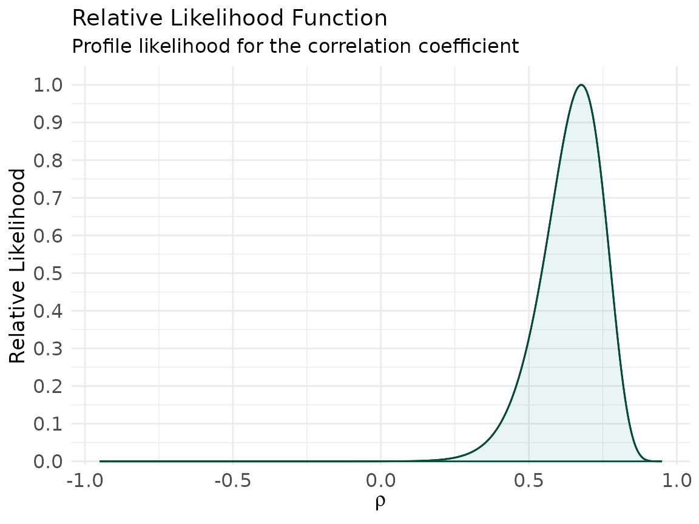
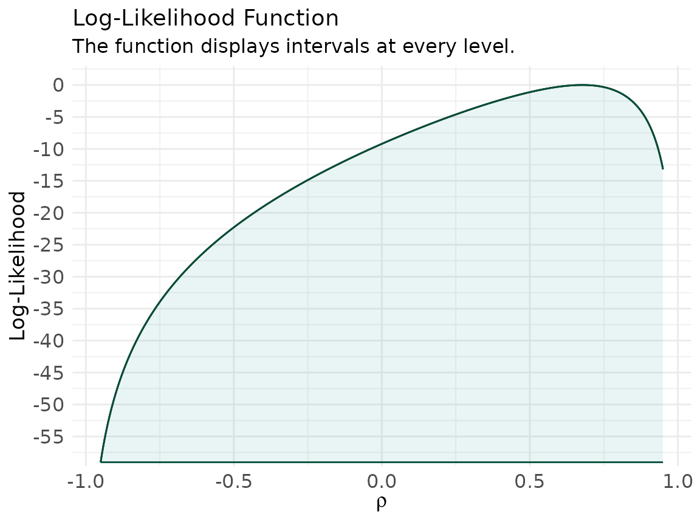
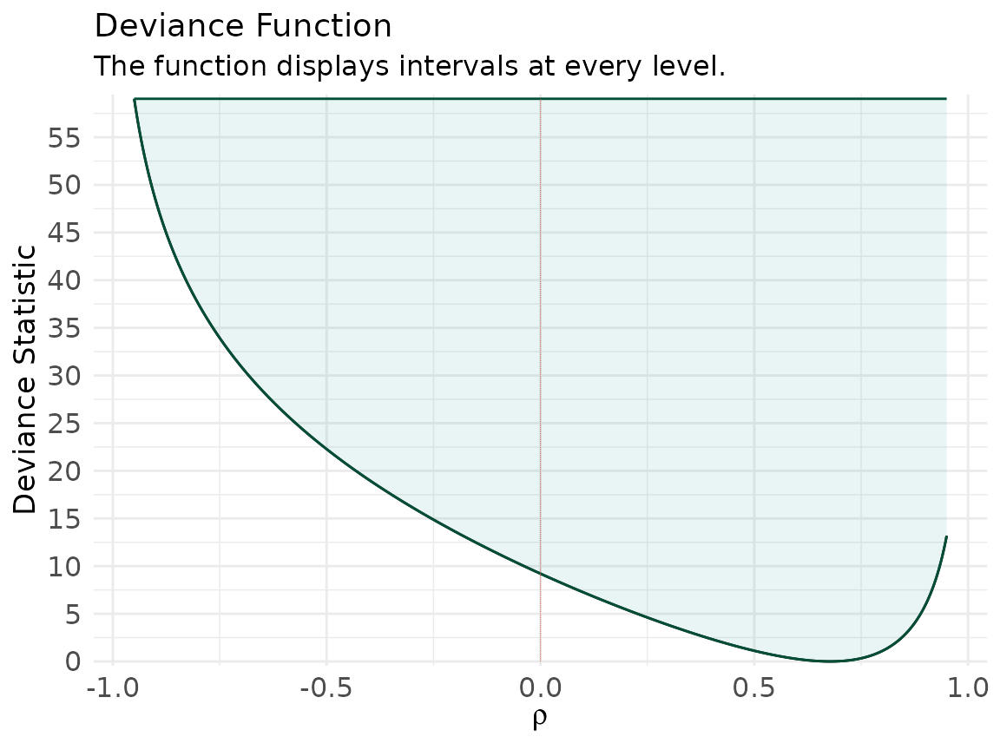
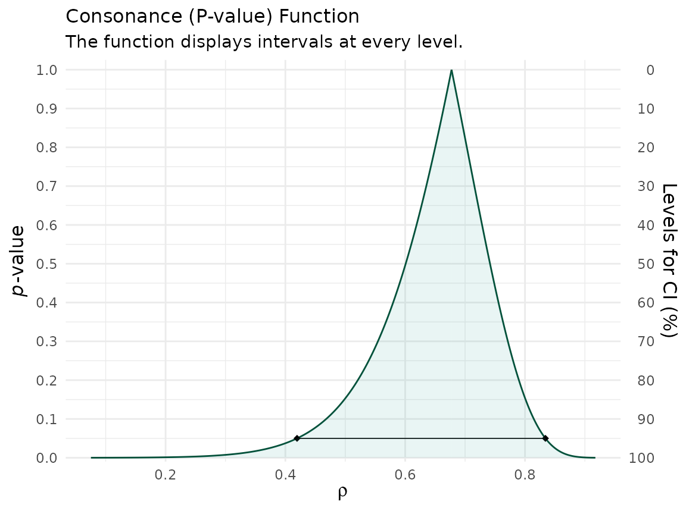
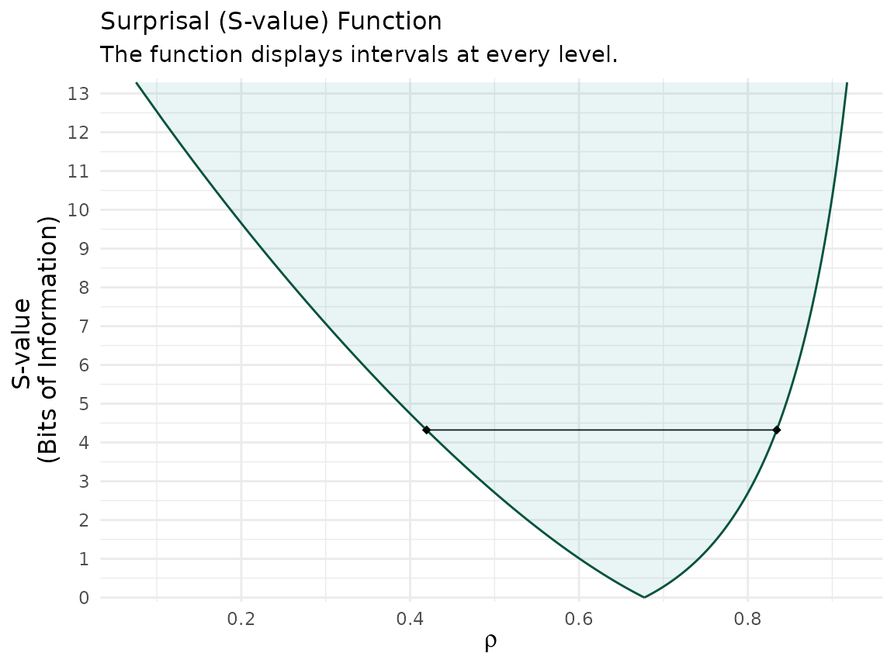

Most of the other vignettes start from a fitted model and read the
likelihood off an object built by another package. Here we do the
opposite: we build a likelihood function from scratch
for a parameter that concurve does not have a dedicated
interval function for — the Pearson correlation coefficient
— and then show that the consonance (P-value) function produced by
curve_corr() tells the same story from the frequentist
side.1,2
The point is methodological. A likelihood function, a consonance function, a confidence distribution, and a surprisal function are different coordinate views of the same underlying object.3,4 If you can build any one of them, you can build the rest, and for a one-parameter target they will very nearly coincide.
We simulate two variables with a moderate population correlation so the example is reproducible.
For a bivariate normal, the log-likelihood at a fixed value of
,
with the four nuisance parameters (the two means and two standard
deviations) profiled out by maximum likelihood, is the profile
log-likelihood of
.1 We
compute it directly: for each candidate
we maximize the bivariate-normal log-likelihood over the nuisance
parameters with optim().
# Profile log-likelihood of rho: maximize over (mu_x, mu_y, log sd_x, log sd_y)
prof_loglik_rho <- function(rho, x, y) {
n <- length(x)
neg_ll <- function(par) {
mux <- par[1]; muy <- par[2]
sx <- exp(par[3]); sy <- exp(par[4])
dx <- (x - mux) / sx
dy <- (y - muy) / sy
quad <- (dx^2 - 2 * rho * dx * dy + dy^2) / (1 - rho^2)
ll <- -n * log(2 * pi) - n * log(sx) - n * log(sy) -
0.5 * n * log(1 - rho^2) - 0.5 * sum(quad)
-ll
}
start <- c(mean(x), mean(y), log(sd(x)), log(sd(y)))
-optim(start, neg_ll, method = "BFGS")$value
}Now evaluate it over a grid of
and coerce the result into the data frame layout that
ggcurve() expects for likelihood functions — the same five
columns curve_lik() produces: values,
likelihood, loglikelihood,
support, and deviancestat.
grid <- seq(-0.95, 0.95, length.out = 600)
ll <- vapply(grid, prof_loglik_rho, numeric(1), x = x, y = y)
loglik_rel <- ll - max(ll) # relative log-likelihood (max = 0)
support <- exp(loglik_rel) # relative (normalized) likelihood, max = 1
lik_rho <- data.frame(
values = grid,
likelihood = exp(ll), # raw profile likelihood -> type = "l3"
loglikelihood = loglik_rel, # relative log-likelihood -> type = "l2"
support = support, # relative likelihood (0, 1] -> type = "l1"
deviancestat = -loglik_rel # -log relative likelihood -> type = "d"
)
class(lik_rho) <- c("data.frame", "concurve")
head(lik_rho)
#> values likelihood loglikelihood support deviancestat
#> 1 -0.9500000 2.658658e-58 -59.03525 2.297821e-26 59.03525
#> 2 -0.9468280 6.788766e-58 -58.09780 5.867384e-26 58.09780
#> 3 -0.9436561 1.643237e-57 -57.21382 1.420214e-25 57.21382
#> 4 -0.9404841 3.792590e-57 -56.37744 3.277853e-25 56.37744
#> 5 -0.9373122 8.387765e-57 -55.58371 7.249364e-25 55.58371
#> 6 -0.9341402 1.785096e-56 -54.82843 1.542820e-24 54.82843This is exactly the object curve_lik() hands back, so
every downstream concurve verb works on it unchanged.
ggcurve(lik_rho, type = "l1", nullvalue = TRUE,
xaxis = expression(rho),
title = "Relative Likelihood Function",
subtitle = "Profile likelihood for the correlation coefficient")
ggcurve(lik_rho, type = "l2",
xaxis = expression(rho),
title = "Log-Likelihood Function")
ggcurve(lik_rho, type = "d", nullvalue = 0,
xaxis = expression(rho),
title = "Deviance Function")
#> Warning: Using `size` aesthetic for lines was deprecated in ggplot2 3.4.0.
#> ℹ Please use `linewidth` instead.
#> ℹ The deprecated feature was likely used in the concurve package.
#> Please report the issue at <https://github.com/zadrafi/concurve/issues>.
#> This warning is displayed once per session.
#> Call `lifecycle::last_lifecycle_warnings()` to see where this warning was
#> generated.
The maximum of the relative likelihood sits at the sample correlation , and the null value receives whatever support the data happen to give it — not a verdict, a height.5
A pure-likelihood interval collects every whose relative likelihood exceeds a cutoff .2 Royall’s conventional cutoffs are and ; the cutoff is the likelihood interval that, for an approximately normal likelihood, matches the usual 95% interval (since ).
support_interval <- function(df, k) {
keep <- df$values[df$support >= 1 / k]
c(lower = min(keep), upper = max(keep))
}
rbind(
`1/6.8` = support_interval(lik_rho, 6.8),
`1/8` = support_interval(lik_rho, 8),
`1/32` = support_interval(lik_rho, 32)
)
#> lower upper
#> 1/6.8 0.4329716 0.8262938
#> 1/8 0.4202838 0.8326377
#> 1/32 0.3251252 0.8643573Now the frequentist view. curve_corr() inverts
cor.test() at every level to produce the consonance
(P-value) function and its surprisal transform.3,6
rho_curve <- curve_corr(
x = x, y = y,
alternative = "two.sided",
method = "pearson"
)
ggcurve(rho_curve[[1]], type = "c", nullvalue = TRUE,
xaxis = expression(rho),
title = "Consonance (P-value) Function")
ggcurve(rho_curve[[1]], type = "s", nullvalue = TRUE,
xaxis = expression(rho),
title = "Surprisal (S-value) Function")
The consonance function peaks at , and its horizontal slice at is the ordinary 95% interval. The surprisal function rescales the same curve into bits of information against each value of .3
The likelihood interval and the 95% consonance interval should land in nearly the same place — that is the whole point.
ci95 <- as.numeric(rho_curve[[1]][which.min(abs(rho_curve[[1]]$intrvl.level - 0.95)),
c("lower.limit", "upper.limit")])
rbind(
`Likelihood 1/6.8` = support_interval(lik_rho, 6.8),
`Consonance 95%` = c(lower = ci95[1], upper = ci95[2])
)
#> lower upper
#> Likelihood 1/6.8 0.4329716 0.8262938
#> Consonance 95% 0.4195070 0.8341067They are close but not identical: the likelihood interval is exact
for the profiled normal model, while cor.test() uses
Fisher’s
approximation. The small gap is a feature to notice, not a bug to hide —
it is the difference between two legitimate inferential summaries.1
Please remember to cite the packages that you use.
citation("concurve")
#> To cite package 'concurve' in publications use:
#>
#> Rafi Z, Vigotsky A (2026). _concurve: Computes and Plots
#> Compatibility (Confidence) Intervals, P-Values, S-Values, &
#> Likelihood Intervals to Form Consonance, Surprisal, & Likelihood
#> Functions_. R package version 3.0.0,
#> <https://CRAN.R-project.org/package=concurve>.
#>
#> Rafi Z, Greenland S (2020). "Semantic and Cognitive Tools to Aid
#> Statistical Science: Replace Confidence and Significance by
#> Compatibility and Surprise." _BMC Medical Research Methodology_,
#> *20*, 244. ISSN 1471-2288. doi:10.1186/s12874-020-01105-9
#> <https://doi.org/10.1186/s12874-020-01105-9>.
#> <https://doi.org/10.1186/s12874-020-01105-9>.
#>
#> To see these entries in BibTeX format, use 'print(<citation>,
#> bibtex=TRUE)', 'toBibtex(.)', or set
#> 'options(citation.bibtex.max=999)'.